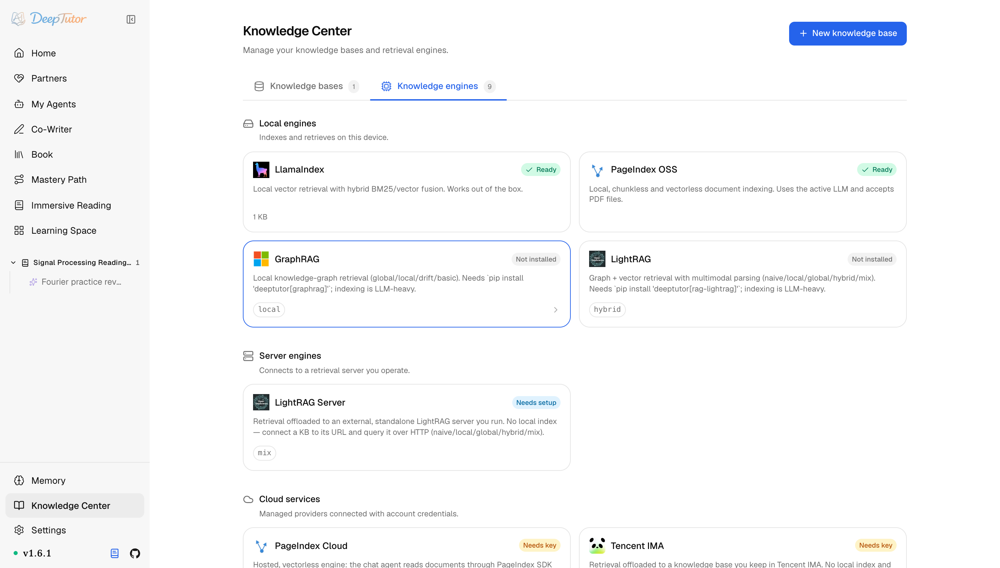

DeepTutor 生態RAG 整合
10 種 RAG 方案任你挑！DeepTutor 不綁死向量庫，本機雲端通吃，附安裝教學！｜零度解說
選擇 DeepTutor 如何從本機索引、智慧代理文件樹、遠端知識服務與即時學習資料庫中檢索。
原文連結：https://docs.deeptutor.info/zh-cn/ecosystem/rag-integration/
最近幫朋友搭 DeepTutor 的知識庫，他問了我一個很典型的問題：RAG（檢索增強生成）是不是只能綁死在某一個向量庫上？
還真不是。
DeepTutor 把檢索當成一條生態邊界，而不是寫死成某一種向量庫。在知識空間裡，知識庫是使用者看到的容器；背後的 RAG 整合，決定材料如何建索引、查詢、引用與同步。
官方一口氣給出了 10 種整合，從本機索引、智慧代理文件樹，到遠端知識服務和即時學習資料庫，全都有。
如果你當初跟我一樣，被"選了一個檢索方案就再也換不掉"的老架構折騰過，那這篇值得看完。下面一張表講明白 10 種方案，再看怎麼裝、怎麼選。
可用整合
先上全家福：

| 整合 | 檢索模型 | 最適合 |
|---|---|---|
| LlamaIndex | 本機向量檢索，混合 BM25/向量融合 | 開箱即用的預設本機 RAG |
| PageIndex OSS | 本機智慧代理遍歷無向量文件樹 | 私有、帶頁面級引用的推理式檢索 |
| GraphRAG | 本機知識圖譜，支援 global/local/drift/basic | 跨文件關係與語料級問題 |
| LightRAG | 本機圖 + 向量，支援 naive/local/global/hybrid/mix | 輕量的圖感知檢索 |
| LightRAG Server | 透過 HTTP 查詢已有獨立伺服器 | 不建本機索引，複用遠端 LightRAG 基礎設施 |
| WeKnora | 透過 HTTP 檢索已有的自託管知識庫 | 不復制文件、不建本機索引，直接複用 WeKnora |
| PageIndex Cloud | 託管上傳 + MCP 驅動的文件遍歷 | 不在本機建置的託管式 agentic 檢索 |
| Tencent IMA | 透過 OpenAPI 訪問已有 IMA 資料庫 | 複用雲端知識庫，並把網址或筆記寫回 |
| MarginNote 4 | 配對裝置同步筆記、摘錄、卡片與腦圖 | 從既有學習工作流中檢索 |
| Obsidian | 在 vault 內即時導航與寫筆記 | 不上傳、不建索引，直接使用本機知識圖譜 |
介面裡這 10 種是分組的：LlamaIndex、PageIndex OSS、GraphRAG、LightRAG 放在 Local，LightRAG Server 放在 Server，PageIndex Cloud、Tencent IMA 與 WeKnora 放在 Cloud，Obsidian 與 MarginNote 4 放在 External knowledge sources。
每張卡片會顯示 Ready、Needs key、Needs setup 或 Not installed，建庫前就能看清依賴。
三種整合契約
多數整合回應普通 rag 工具；有三種刻意使用了不同的契約。
- PageIndex OSS 是智慧代理（Agent）式檢索：本機閱讀迴圈先檢查文件結構，再只開啟真正需要的頁面；PageIndex Cloud 透過託管儲存與 MCP（模型上下文協定）工具使用同類遍歷方式。
- Obsidian 沒有檢索索引；專屬能力直接在即時 vault（Obsidian 的筆記儲存庫）中導航和寫入。
- MarginNote 4 透過專用導航工具訪問同步進來的學習圖譜。
表中其他整合（包括 LightRAG Server 與 Tencent IMA）連線為知識庫後，都可以回應普通 RAG 查詢。
安裝與設定
LlamaIndex 是預設引擎，開箱即用；可選的本機引擎需要顯式安裝：
pip install 'deeptutor[graphrag]'
pip install 'deeptutor[rag-lightrag]'這兩行用的是 pip（Python 套件管理器），裝的是對應引擎的可選元件（extras）。
LightRAG extra 只安裝受支援的 LightRAG 開發工具包（SDK）；文件解析仍是 Settings → Document Parsing 下的獨立選擇。
遠端服務與即時資料庫，從知識引擎卡片或已連線知識庫中設定。
按資料歸屬選擇
最後給一份決策清單，四句話對應四種情況：
- 部署應同時擁有文件與檢索狀態時，選擇 本機索引 。
- 頁面級結構比相似片段更重要時，選擇 智慧代理文件樹 。
- 已有 RAG 部署應繼續做權威來源時，選擇 遠端服務 。
- DeepTutor 應進入學習者原有知識系統而不是複製它時，選擇 即時資料庫 。
按資料歸屬來選，而不是按名氣來選，這是這一頁裡最值錢的建議。
10 種方案擺在一起隨便挑，本機雲端通吃，對經常折騰知識庫的朋友來說，這個靈活度真的有點離譜。
最後照例說一句：實際效果還會受到模型、提示詞以及具體使用場景的影響，建議大家結合自己的需求實際體驗評估。